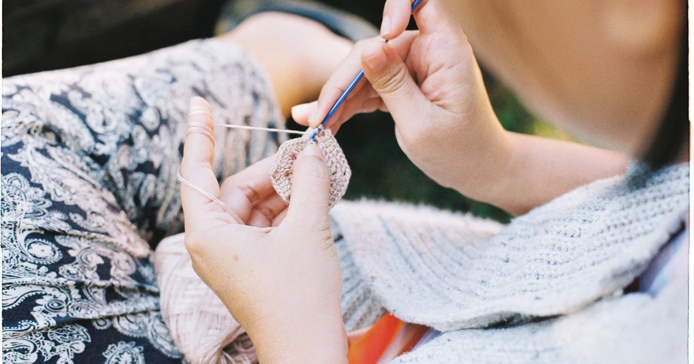
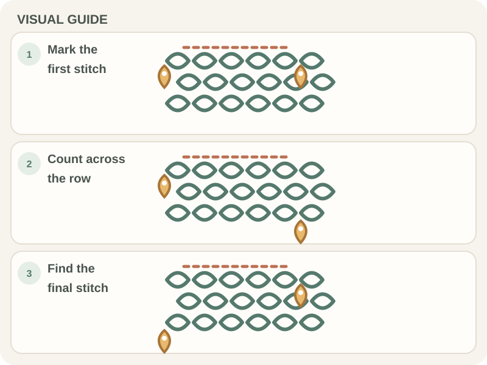

Crochet Basics · Beginner guide
How to Keep Crochet Edges Straight as a Beginner
Find the edge stitches in each row and use consistent turning-chain instructions to keep the sides even.

Short answer: To keep crochet edges straight, work the correct first and last stitch in every row and keep the stitch count consistent. Use stitch markers while learning, and follow the pattern’s turning-chain rule.
Before you begin
Use a small, light-colored swatch and a removable stitch marker at each row edge. The first and last stitches can be difficult to see until you know where their top V sits.
Check your pattern’s stitch count and whether the turning chain counts as a stitch. That rule determines whether the chain or the first real stitch forms the edge.
Step-by-step instructions
- Step 1: At the beginning of a row, read the turning-chain instruction and identify the first stitch or space where the pattern says to work.
Real crochet photograph by Pexels contributor via Pexels. - Step 2: Place a marker in the first stitch you make if the edge is hard to see. Keep working the row and count each stitch as you go.
- Step 3: At the far edge, identify the last stitch before making it. Work into that stitch if the pattern calls for it; do not automatically add a stitch into the turning chain.
- Step 4: After turning, compare the new row with the pattern’s first-stitch rule and move the markers to the new row edges. Count before beginning the next row.

How to check your work
The row counts should match the pattern, and the two sides should look reasonably parallel over several rows. A small amount of hand-tension variation is normal.
If the work widens, look for an extra stitch at an edge. If it narrows, check for a missed first or last stitch before changing your hook or yarn.
Common beginner problems
- If the edge gains stitches, check whether you worked into both the turning chain and the first stitch when the pattern counts only one.
- If the edge loses stitches, find the first or last V that was skipped and place a marker there on the next row.
- If the sides look wavy despite an even stitch count, relax your tension and compare several rows before adjusting hook size.
Tools for tracking row edges
Light-colored, smooth yarn helps you see the first and last stitches. Removable stitch markers make those edge stitches easier to find on the next row.
Keep the pattern’s row count and turning-chain rule nearby. The rule tells you whether the turning chain belongs in the stitch total.
Practice plan
Work a small swatch and mark its first and last stitches for several rows. Count every row and note whether the pattern counts the turning chain.
If your count changes, revisit the stitch-counting guide and row-turning lesson.
Quick summary
- Identify the first and last stitch before working the row.
- Use markers to make row edges easier to see.
- Count each row and follow the pattern’s turning-chain rule.
Frequently asked questions
Why does my crochet project get wider?
An extra stitch is often being added at a row edge. Check whether the turning chain counts, and look for an accidental stitch beside it.
Why does my project get narrower?
A first or last stitch may be missed. Mark the row edges and count before turning.
Should I always crochet into the turning chain?
No. Follow the pattern’s edge instructions. Some patterns count the turning chain as a stitch; others have you work into the first or last real stitch.